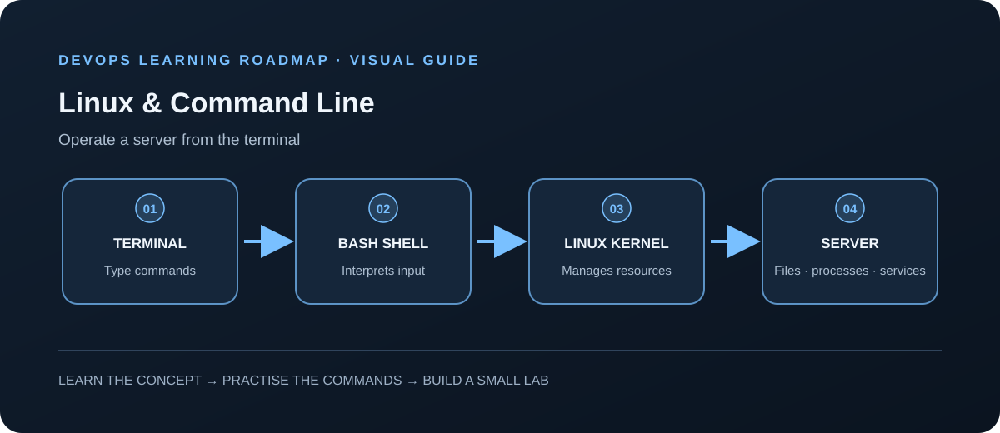
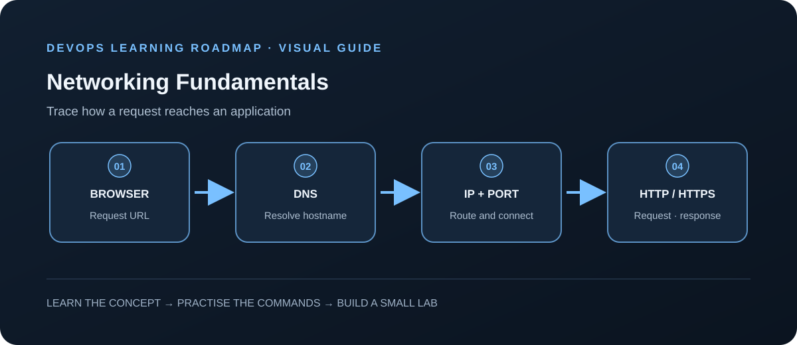
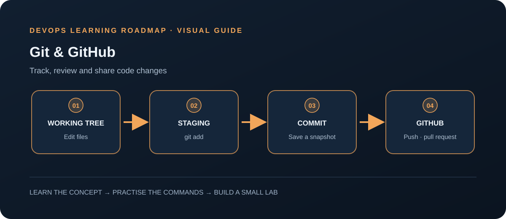
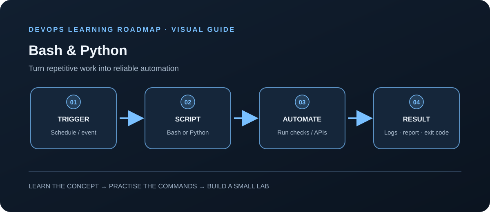
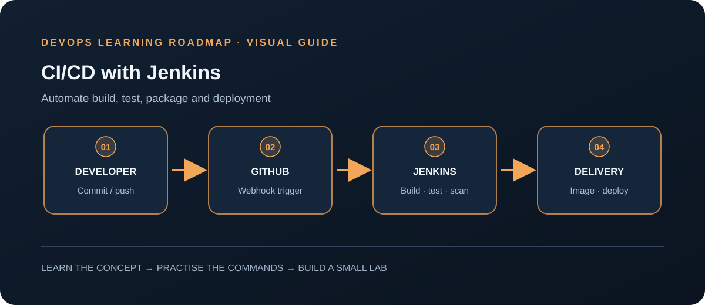
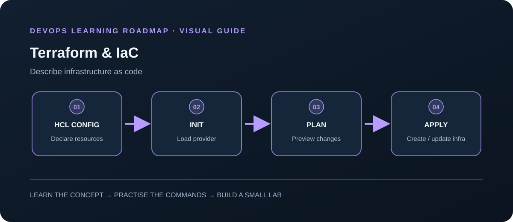
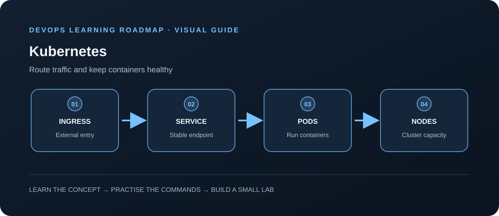
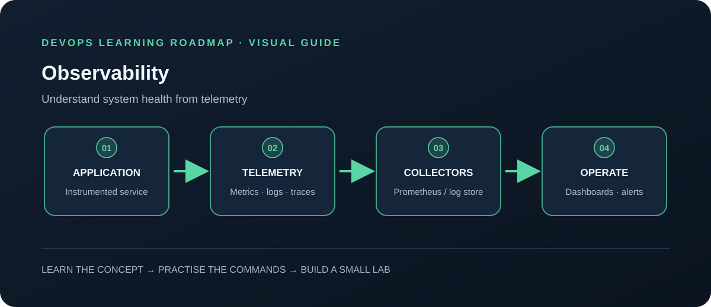
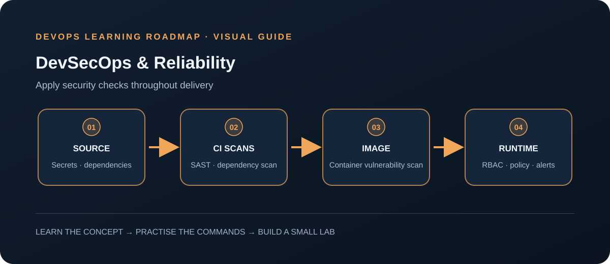
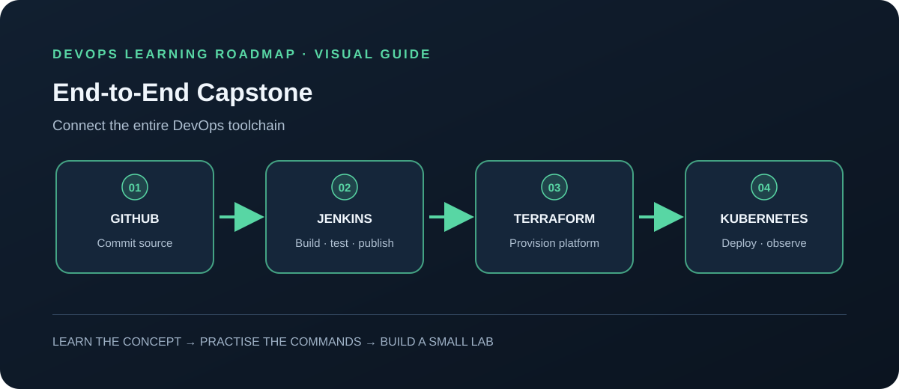

Learn the concept → practise it → explain what you built
Do not rush to Kubernetes or collect tools. Spend enough time on Linux, networking and Git first. The timeline is flexible: repeat a stage until you can complete its practice tasks without copying every command.
From developer commit to production
Understand how GitHub, Jenkins CI/CD, Docker, a container registry, Kubernetes and monitoring work together.

12 steps from beginner to job-ready foundations
Each stage includes what to learn and a small outcome to prove your understanding.

Linux & command line
Understand the operating system that powers most servers and cloud workloads.
Practice outcome: Set up an Ubuntu VM, create users, manage permissions, inspect processes and configure a simple service using systemd.

Networking fundamentals
Learn how computers, applications and services communicate.
Practice outcome: Use ping, curl, ss, nslookup or dig to troubleshoot a service that cannot be reached. Explain what happens when you open a website.

Git & GitHub
Track changes, collaborate safely and understand the development workflow.
Practice outcome: Create a repository, work on a feature branch, open a pull request and resolve a simple merge conflict.

Bash & Python basics
Automate repeatable tasks. You do not need to become a software developer, but you should be comfortable reading and writing simple scripts.
Practice outcome: Write a script that checks disk usage, reports the result and exits with a useful status code.

Cloud fundamentals (start with AWS or Azure)
Choose one cloud provider first. Understand the common concepts before learning multiple platforms.
Practice outcome: Deploy a small virtual machine, connect securely, review network rules and understand the cost before deleting it.

Docker & container basics
Package an application and its dependencies so it can run consistently across environments.
Practice outcome: Containerise a small web app, expose a port, persist data with a volume and run it with Docker Compose.

CI/CD pipelines
Automate code checks, builds and deployments. Start with GitHub Actions; learn Jenkins later if your work requires it.
Practice outcome: Build a pipeline that runs on a pull request, tests the app, builds a Docker image and publishes it to a registry.

Infrastructure as Code with Terraform
Define infrastructure in version-controlled configuration instead of creating every resource manually.
Practice outcome: Provision a small cloud network and VM with Terraform. Review the plan, understand state and destroy test resources safely.

Kubernetes fundamentals
Move to Kubernetes after you are comfortable with containers. Learn the core objects before managed services.
Practice outcome: Deploy your containerised app to a local cluster, expose it with a Service and troubleshoot a failing Pod.

Monitoring, logging & observability
Learn how to know whether an application is healthy and how to investigate when it is not.
Practice outcome: Create a dashboard for your app, inspect its logs and configure an alert for a simple failure condition.

DevSecOps & reliability basics
Build safe habits into every stage rather than treating security as a final step.
Practice outcome: Remove hard-coded credentials, scan a container image and document a basic backup and recovery procedure.

Build and deploy an end-to-end project
Combine the skills into one small but complete delivery workflow. Keep the project simple and document your decisions.
Practice outcome: Push code to GitHub, run automated tests, build an image, deploy to a test Kubernetes cluster using infrastructure created with Terraform, and monitor the app.
Turn the roadmap into practical experience
Use the learning paths for deeper explanations, then follow the lab outlines to practise each stage. Add your project notes and commands to GitHub as a portfolio.